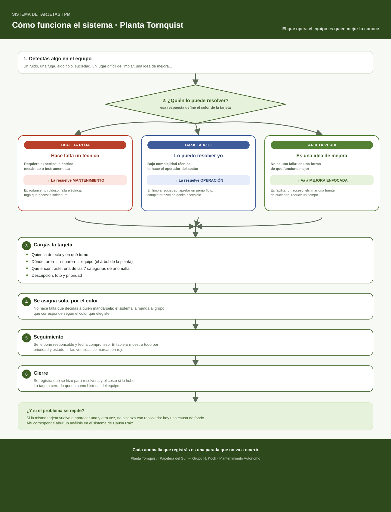

La guía completa en un solo lugar, para revisar cuando tengas dudas. De "vi algo en el equipo" a "quedó resuelto y registrado".
El color no describe qué tan grave es. Describe quién la resuelve. Es lo primero que elegís al cargar, y de ahí en más el sistema se encarga.
| Si... | Color | La resuelve | Ejemplos |
|---|---|---|---|
| Para resolverlo hace falta un técnico | ROJA | Mantenimiento | Rodamiento ruidoso, falla eléctrica, fuga que necesita soldadura |
| Lo podés resolver vos en el turno | AZUL | Operación | Limpiar suciedad, apretar un perno flojo, completar nivel de aceite |
| No es una falla, es una idea de mejora | VERDE | Mejora Enfocada | Facilitar un acceso, eliminar una fuente de suciedad, reducir un tiempo |
El mismo flujo, de punta a punta. Podés hacer zoom (Ctrl + rueda, o pellizcar en el celular) o descargarlo para imprimir y pegar en el sector.

Elegís el color y el sistema la asigna al grupo que corresponde. Esa es toda la decisión.
Área → subárea → equipo. Es el mismo árbol que usan EHS y Causa Raíz, así los tres sistemas hablan del mismo equipo.
Queda registrado qué se encontró y qué se hizo. Con el tiempo, eso es la memoria técnica del equipo.
Cuando la misma tarjeta vuelve una y otra vez, no alcanza con resolverla. Ahí corresponde abrir un análisis de Causa Raíz.
{kind=link}